Libri
Riassunti pratici: concetti chiave e azioni.
Tutte le schede
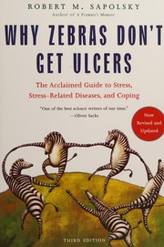
30/10/2026
Perché alle zebre non viene l'ulcera?
Robert M. Sapolsky
Leggi la scheda →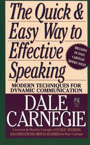
29/10/2026
Come parlare in pubblico e convincere gli altri
Dale Carnegie
Leggi la scheda →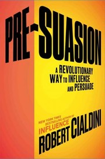
28/10/2026
Pre-Suasion
Robert B. Cialdini
Leggi la scheda →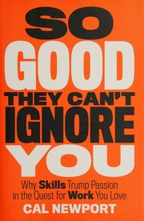
27/10/2026
So Good They Can't Ignore You
Cal Newport
Leggi la scheda →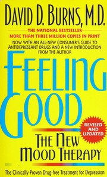
26/10/2026
Feeling Good
David D. Burns
Leggi la scheda →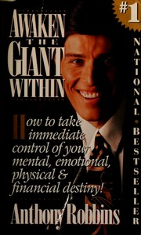
25/10/2026
Awaken the Giant Within
Tony Robbins
Leggi la scheda →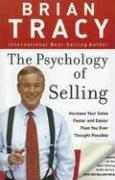
24/10/2026
The Psychology of Selling
Brian Tracy
Leggi la scheda →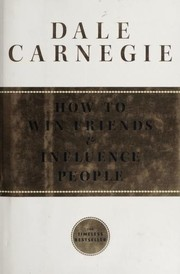
23/10/2026
Come trattare gli altri e farseli amici
Dale Carnegie
Leggi la scheda →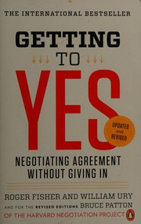
22/10/2026
Getting to Yes
Roger Fisher e William Ury
Leggi la scheda →
21/10/2026
Mindset
Carol S. Dweck
Leggi la scheda →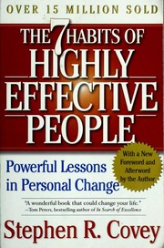
20/10/2026
Le 7 regole per avere successo
Stephen R. Covey
Leggi la scheda →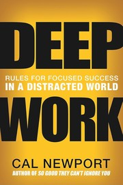
19/10/2026
Deep Work
Cal Newport
Leggi la scheda →18/10/2026
L'uomo in cerca di senso
Viktor E. Frankl
Leggi la scheda →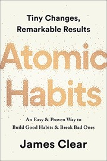
17/10/2026
Atomic Habits
James Clear
Leggi la scheda →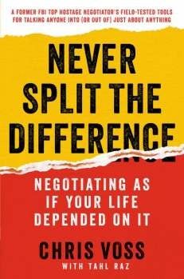
11/10/2026
Never Split the Difference
Chris Voss con Tahl Raz
Leggi la scheda →
12/10/2026
Talk Like TED
Carmine Gallo
Leggi la scheda →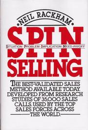
13/10/2026
SPIN Selling
Neil Rackham
Leggi la scheda →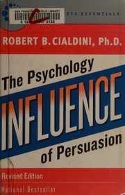
14/10/2026
Le armi della persuasione
Robert B. Cialdini
Leggi la scheda →15/10/2026
Intelligenza emotiva
Daniel Goleman
Leggi la scheda →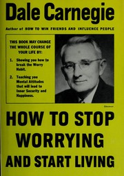
16/10/2026
Come vincere lo stress e cominciare a vivere
Dale Carnegie
Leggi la scheda →